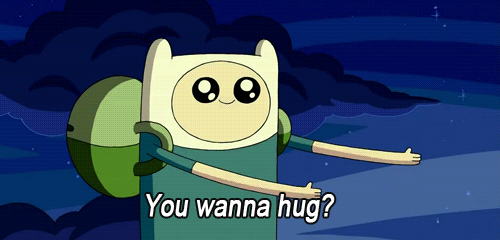
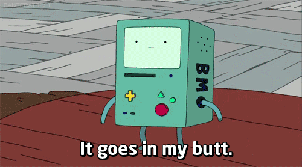
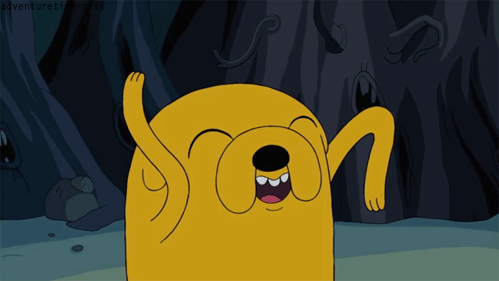
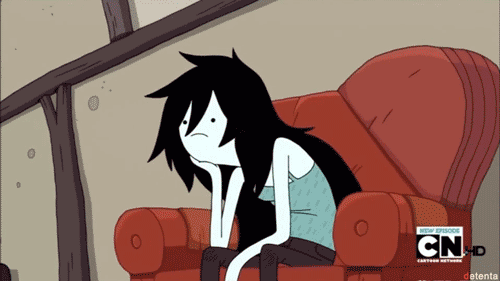
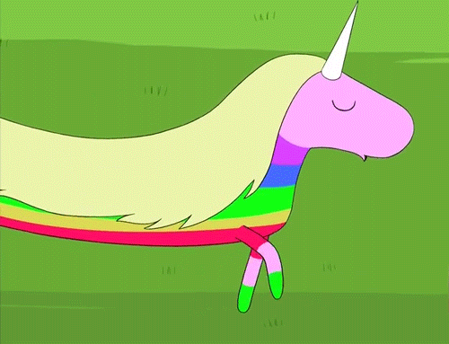
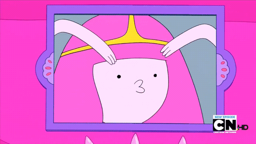
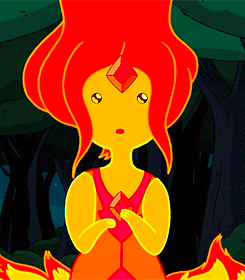
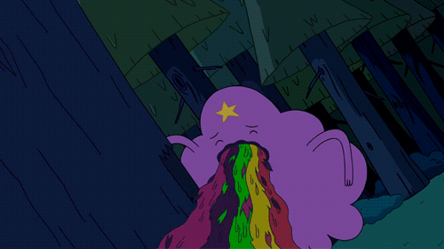
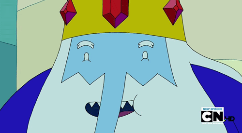

Finn
Finn est un gamin farfelu qui rêve un jour de devenir un héros. Il n'a pas l'air bien méchant comme ça, mais face aux forces du Mal, il fonce dans le tas. C'est lui, typique.
Beemo
Beemo est bien plus que le colocataire de Finn et Jake. Beemo est aussi leur ami, appareil photo, réveil matin et console de jeux.
Jack
Le meilleur ami de Finn est un vieux chien plein de sagesse au cœur d'or. Jake a le pouvoir magique de s'étirer et de s'agrandir. Lorsqu'il ne combat pas les forces du Mal, il joue du violon alto avec sa petite amie, Miss Rainicorn.
Marceline
Marceline est une rockeuse déjantée. Des siècles passés à arpenter la Terre de Ooo ont fait d'elle une tête brûlée qui n'a peur de rien.
Miss Rainicorn
Miss est l'animal de compagnie fidèle et majestueux de la Princesse Chewing Gum. Sa passion pour l'alto en fait la partenaire idéale de Jake.
Princesse ChewinG Gum
En tant que nerd autoproclamée et millionnaire, la Princesse Chewing Gum se jette corps et âme dans tout ce qui touche au monde des geek : de la technologie des fusées à l'élevage des tortues.
Princesse des flammes
La Princesse des Flammes est la princesse tout feu tout flamme du Royaume des flammes, et elle est aussi la nouvelle amourette de Finn. Ses pouvoirs de flammes dépendent de ses émotions… et tout le monde sait qu'elle se met en colère très facilement.
Princesse Lumpy Space
La Princesse Lumpy Space vient du royaume nuageux de Lumpy Space. Elle est le type même de l'adolescente gâtée.
Roi des glaces
Armé d'une couronne magique et d'un cœur de glace, le Roi des Glaces n'a qu'un seul but : se trouver une femme par tous les moyens possibles.